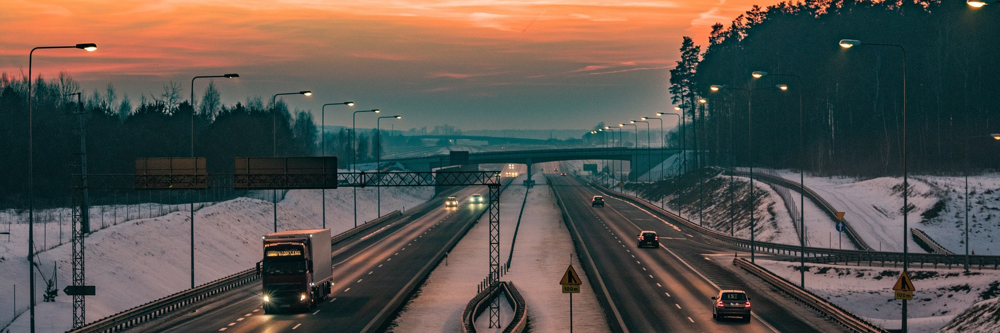

Vivre à Triskalya

Transports
La commune est accessible depuis l'autoroute A8 la reliant à la capitale de la région, Filtanyë, et à la capitale fédérale, Isfalitë. La route fédérale 123 longe quant à elle la côte et dessert la plupart des quartiers de la commune tout en la reliant aux autres communes du district.
Afin de limiter le nombre de véhicules sur les routes, le district de Plafälda a mis en place un réseau de bus composé de 2 lignes dans le but de relier ensemble les différents quartiers de la commune. Un ticket est obligatoire pour circuler sur le réseau. Chaque ticket coûte 2 Aglints et est valable 1 heure.
La commune possède également une gare. Elle permet depuis Triskalya de rejoindre Filtanyë et Isfalitë. Le trajet Triskalya - Isfalitë dure environ 2 heures et 30 minutes. Afin d'inciter les usagers à prendre le train pour leurs déplacements, un abonnement unique a été mis en place par l'Etat fédéral. Pour 30 Aglints par mois, il est possible de circuler de manière illimitée sur les réseaux de train et de bus d'Aglitanie, dont celui de Triskalya ha Plafälda. Pour plus de renseignements, n'hésitez pas à consulter le site des Transports Aglitaniens : www.aglitransport.aa
Logements et commerces
La commune de Triskalya ha Plafälda accompagne les nouveaux résidents qui souhaitent y emménager. Elle peut les aider à prendre contact avec des agences immobilières de la région afin de trouver un logement. Elle propose également des logements à loyer modéré pour les foyers les plus modestes.
La commune comporte également de nombreux commerces. Consciente qu'avoir un quartier riche en commerces le rend plus attractif, elle encourage les commerçants à s'installer à Triskalya. Dans le cadre du plan "Vie de quartier" organisé par la région, de nombreux avantages leur sont accordés afin de dynamiser le centre-ville et de lutter contre sa désertification.